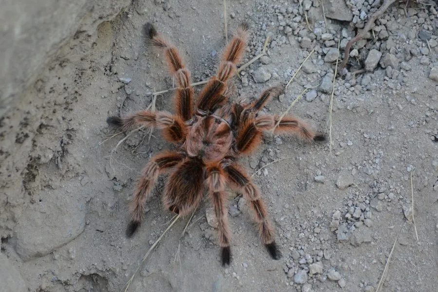

蛛形动物 · 动物界
智利红玫瑰 Grammostola rosea

原产智利的温顺捕鸟蛛，全身覆盖红棕色绒毛，足展可达 15 厘米，是异宠市场上最常见的捕鸟蛛之一。
- 分类
- 门节肢动物门纲蛛形纲目蜘蛛目科捕鸟蛛科属玫瑰捕鸟蛛属
- 栖息环境
- 智利北部的干旱灌丛、荒漠边缘及石缝洞穴
- 地理分布
- 智利北部及邻近的南美洲干旱地区
- 保护级别
- IUCN 暂无评估；非中国原产，在中国无保护级别
物种志
智利红玫瑰成年个体足展 12–15 厘米，身体覆盖浓密的红棕色绒毛，头胸甲与足部带金属般的光泽，腹部圆润，八足粗壮；雌蛛体型大于雄蛛，寿命也长得多。它性情温顺、行动缓慢，受到惊扰时常用后足摩擦腹部，把带刺的蛰毛弹向对方，蛰毛接触皮肤或眼睛会引起瘙痒和红肿。
它原产于智利北部的阿塔卡马沙漠边缘与干旱灌丛，栖息在自己挖掘的洞穴或石缝中，夜间外出捕食昆虫、小型蜥蜴和蛙类。雌蛛每次产卵约 100–300 枚，卵囊由雌蛛守护，约 2–3 个月孵化。由于性格温和、饲养容易，它长期是异宠贸易的热门物种，野外捕捉对其种群造成压力；在中国它属于外来物种，饲养时不可随意放生，接触后应及时洗手。
形态与习性
- 食性昆虫、小型蜥蜴和蛙类
- 足展12–15 cm
- 寿命雌蛛 15–20 年，雄蛛约 3–5 年
- 繁殖卵生，每窝约 100–300 枚，孵化约 2–3 个月
- 活动节律夜行性
- 防御弹射腹部蛰毛，接触皮肤或眼睛会引起瘙痒红肿
- 毒性毒性弱，对人威胁小，但蛰毛需避免接触
趣味知识
- 智利红玫瑰捕鸟蛛性情温顺，是新手最常饲养的捕鸟蛛之一。
- 它受惊时会用后足弹射腹部蛰毛，这些毛接触皮肤会引起过敏瘙痒。
- 雌蛛寿命可达 15–20 年，而雄蛛成熟后通常只能再活几年。